NAVA Research · 2025
What 890 Australian creative practitioners told us about generative AI
Overview
The largest survey of Australian visual artists on generative AI to date.
Who Responded
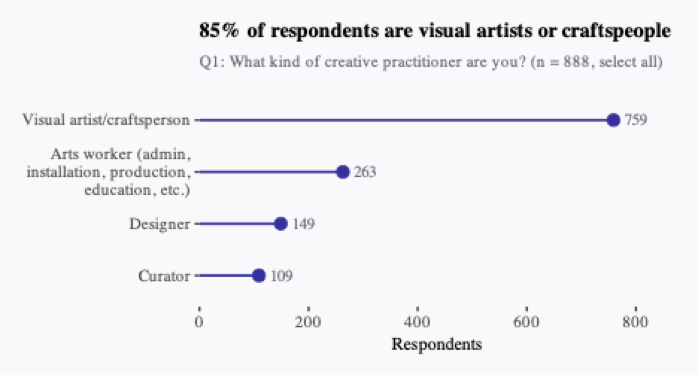
Identity
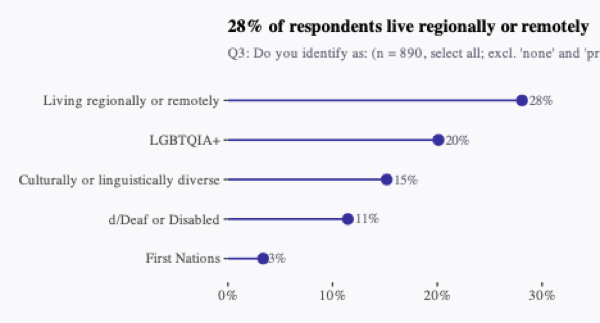
Adoption
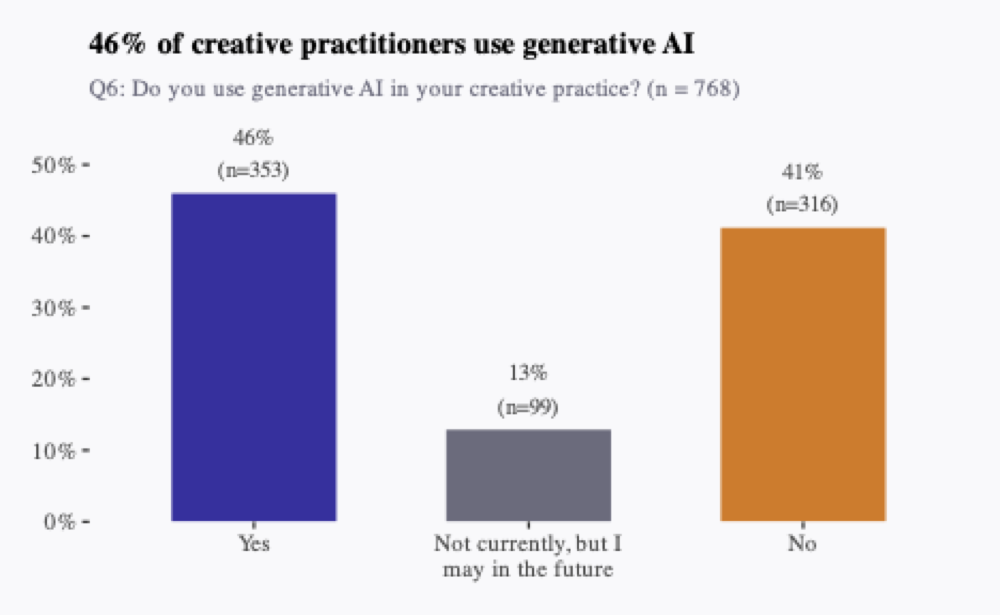
What For
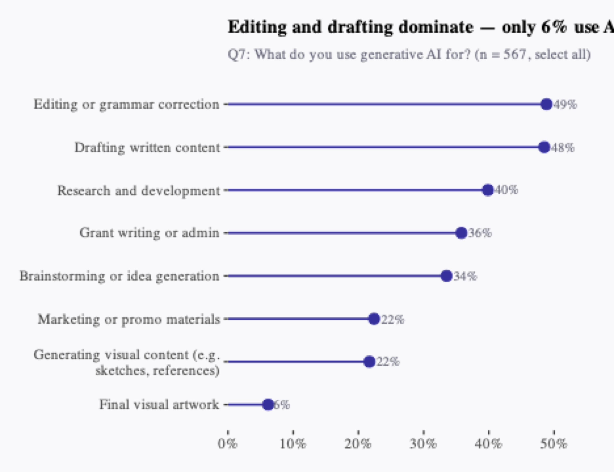
Motivation
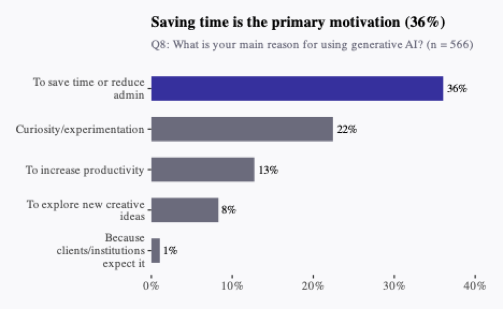
In Their Words
For underfunded and time poor arts workers, AI can be enormously helpful in cutting down time for certain tasks… AI has helped to not only make that workload more manageable, but also to provide a springboard for tasks which are unfamiliar or outside of existing expertise.
Usage
Positives
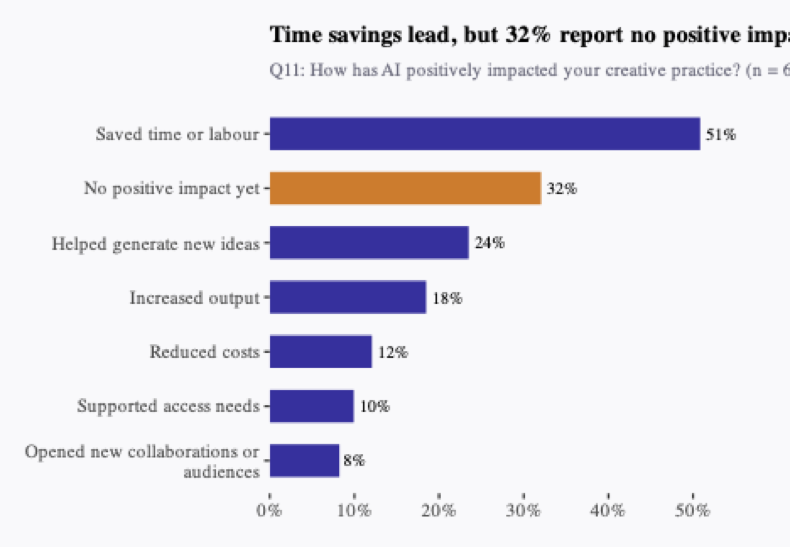
The Other Side
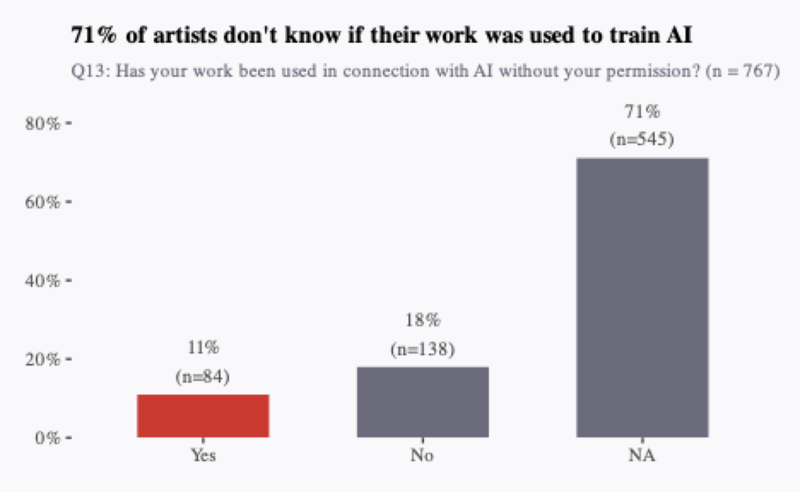
Response
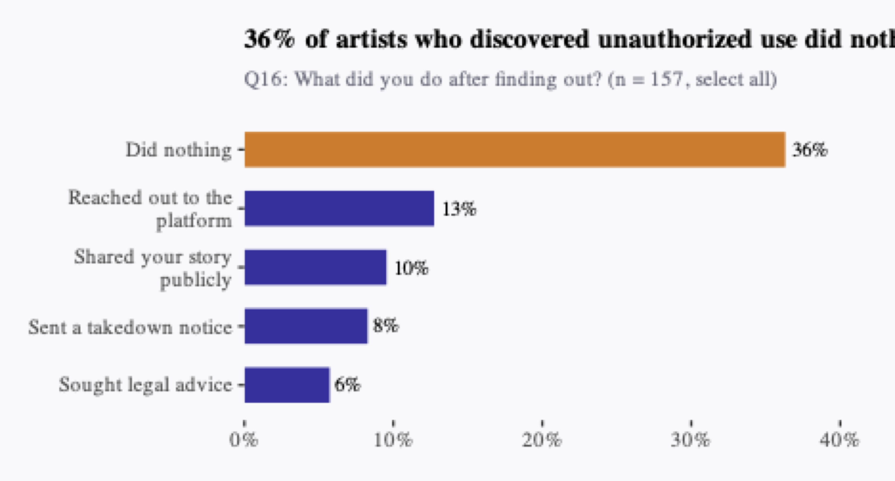
In Their Words
Your work can be taken, anytime, anywhere. AI runs in background, 24hrs/365days. Large companies pilfer ideas. Change colours or shapes. There is no recompense for original artist. Single artist does not have the legal ‘buying power’ of a business or corporation.
Economic Impact
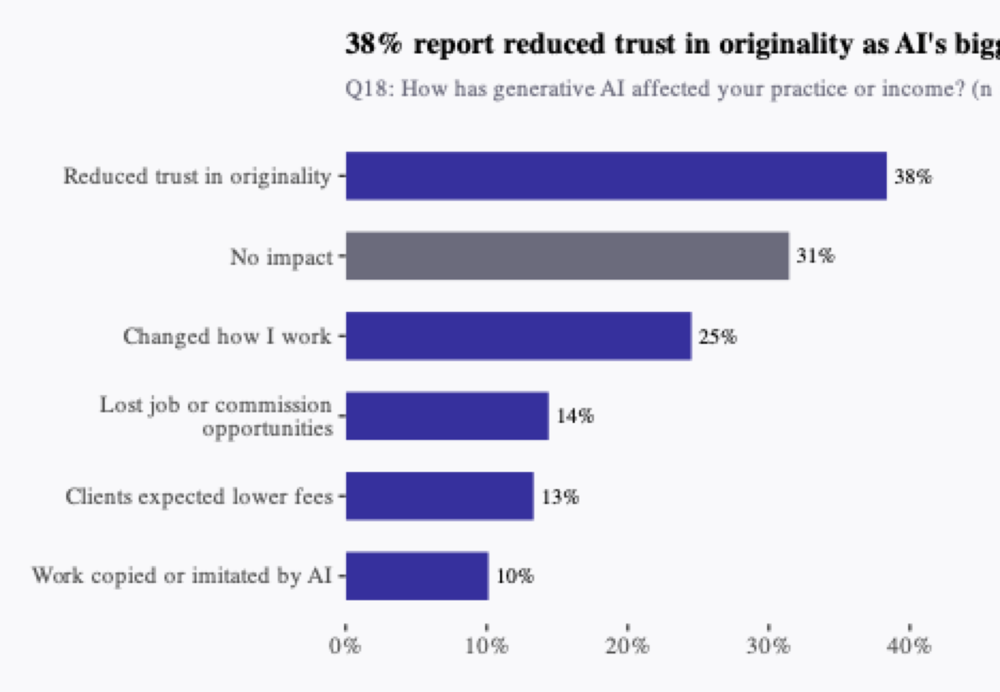
Lost Commissions
I am a photographer and photo editor and have lost clients to places that offer AI editing. I cannot compete with the prices… I have lost enough work and find it harder to find new clients that I am planning on changing careers.
Barriers
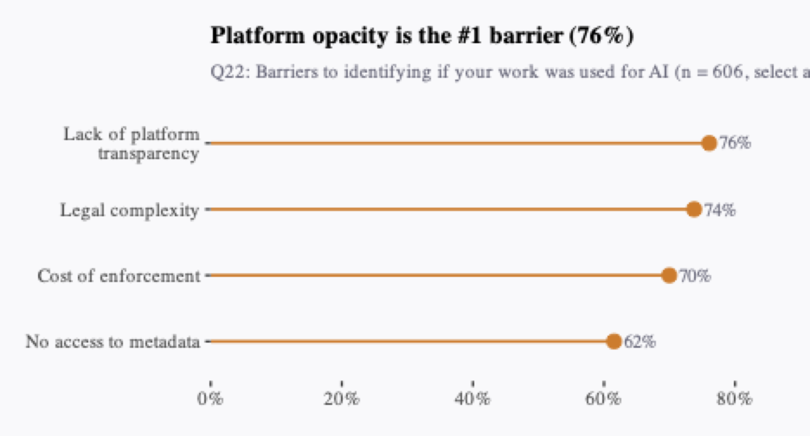
Transparency
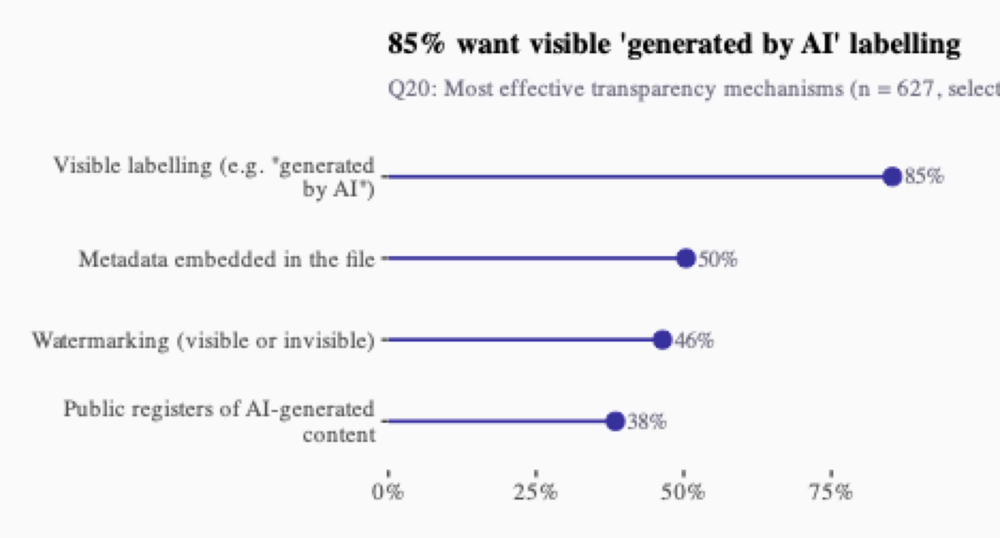
Disclosure
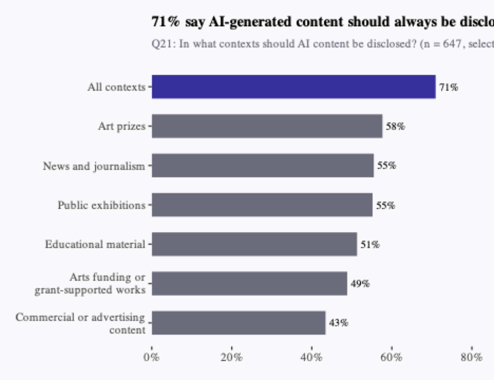
Regulation
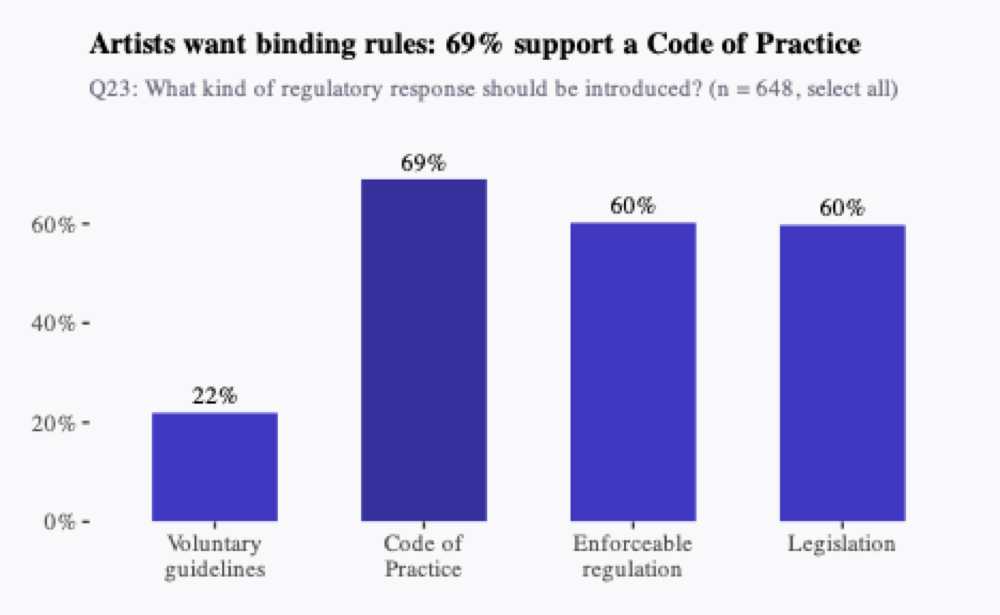
Compensation
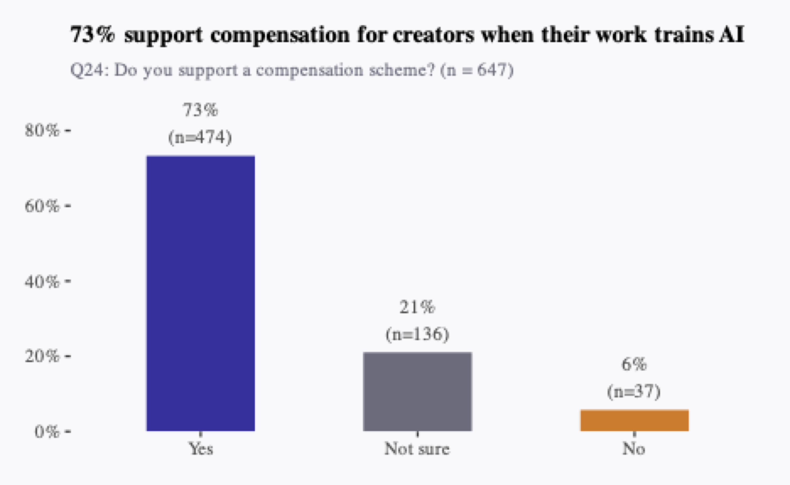
Licensing
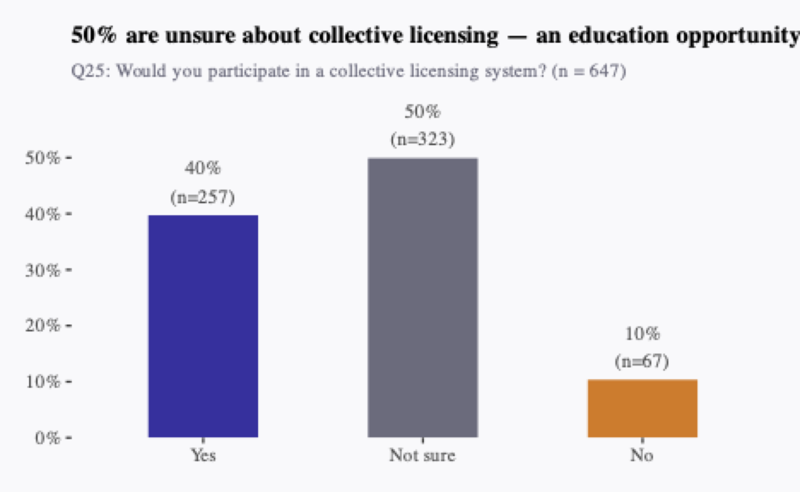
Platforms
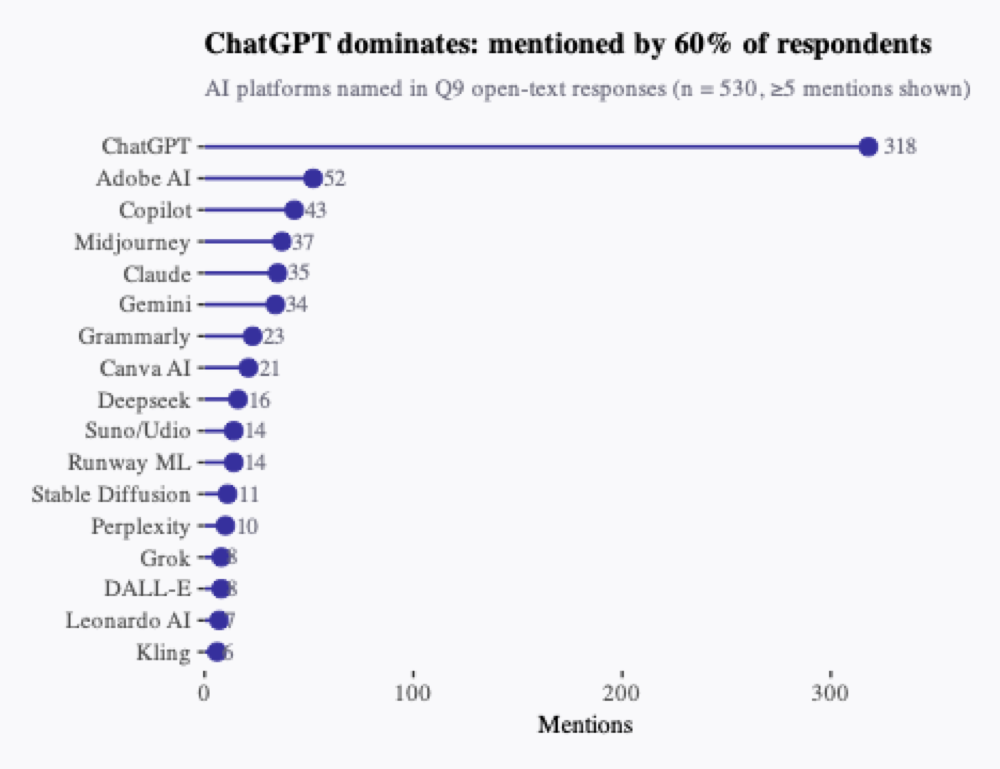
Themes
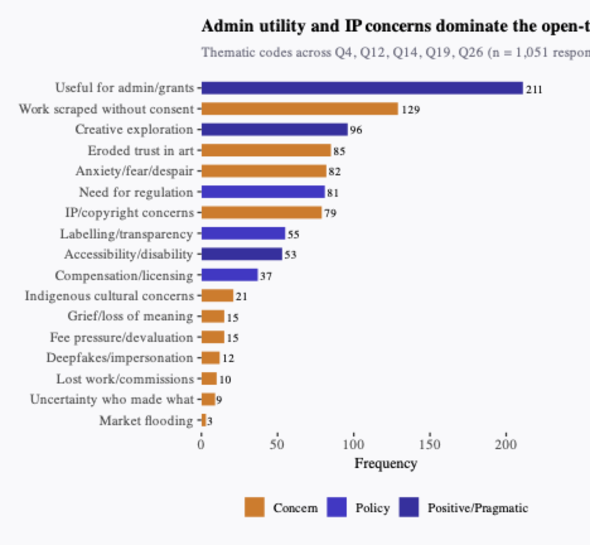
Existential Fear
I feel that AI can create something in a few seconds, that would take me months to create. So I feel less motivated to make art. It feels pointless.
Cultural Concerns
I am a modern Celtic fine artist. People are using AI to generate Celtic art. AI cannot reproduce my culture’s art form, it looks like spaghetti vomit. It misrepresents Celtic art in every way. Celtic art is an old cultural art form with rules and traditions.
Indigenous Voices
It is already hard enough for genuine First Nations artists to get our art out there without adding AI or digitally created work to the mix. In my opinion all digital works AI or otherwise are not genuine art. In particular anything that is AI generated.
Opportunity
I love the opportunities AI offers… none offer the sort of possibilities that AI delivers. The trick is to make it work FOR you, to make it your own creative tool that can transform but maintain your own creative signature.
Takeaways
Data and analysis available at the project repository